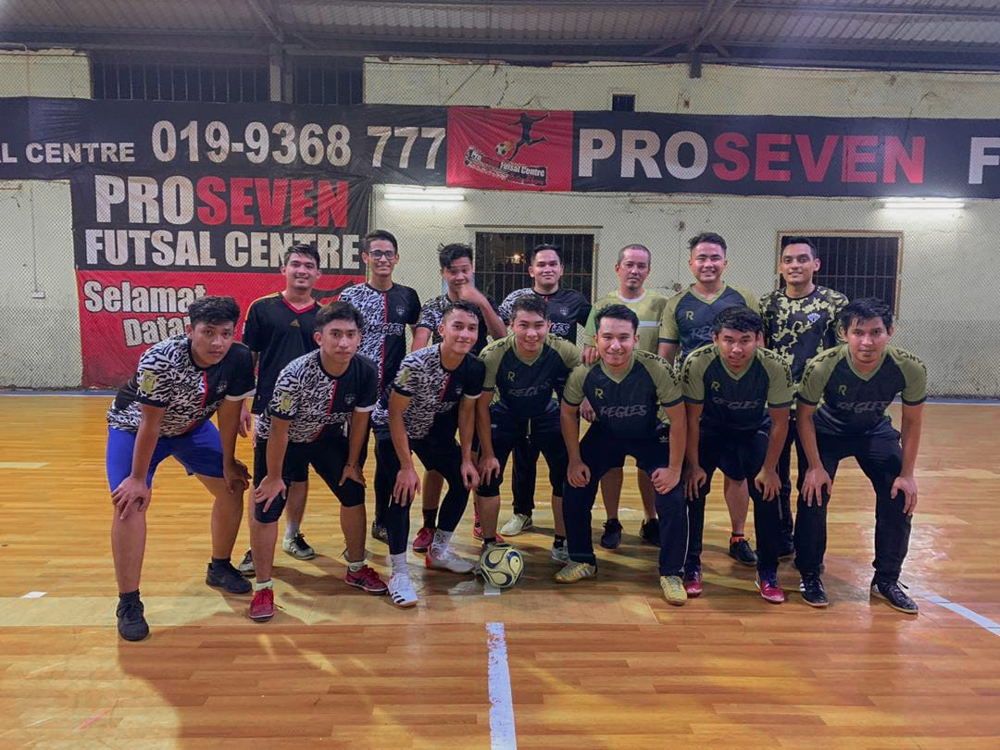
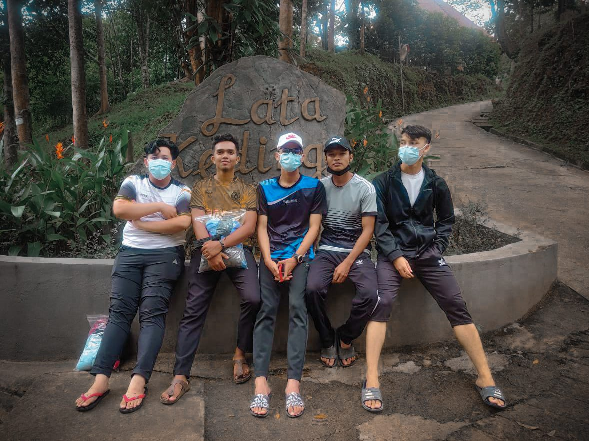
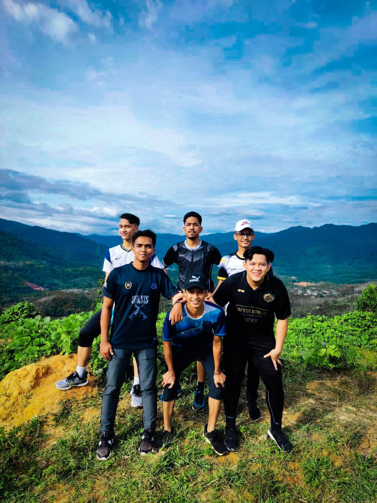
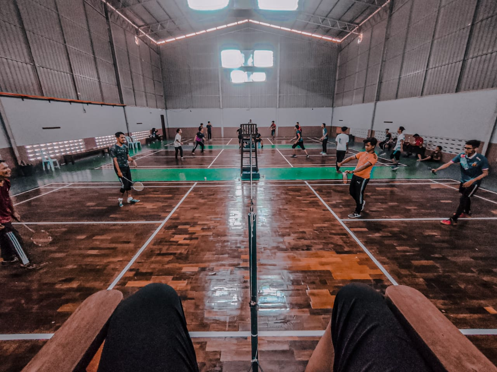

My first hobby is playing futsal
I love playing futsal because when playing futsal, almost all body
parts is moved, and it can increase hearts endurance, lung capacity,
muscle power, muscular endurance,flexibility, body composition, and
mental health. Not only beneficial for health, futsal is also useful
to increase cognitive function (memory and attention). Futsal can
prevent physical stress and oxidative stress.

My second hobby is travelling
I love travel because travel takes me out of our comfort zones and inspires me to see,
taste and try new things. It constantly challenges me, not only to adapt to and explore
new surroundings, but also to engage with different people, to embrace adventures as
they come and to share new and meaningful experiences with friends and loved ones:

My third hobby is hiking
Walking through nature and breathing clean air helps me to relax and get
away from the stress of the city and work as a student. Hiking helps me to forget
all the problems, being highly recommended for people suffering from anxiety, stress
or depression

My last hobby is playing badminton
Badminton is a sport that makes me feel active and healthy while having fun.
It is the source of my energy. Playing this sport makes me feel strong and
confident. Each stroke of the racket makes the typical “whoosh” sound that
I love. I feel I could rule the world with my precise and calculated strok
